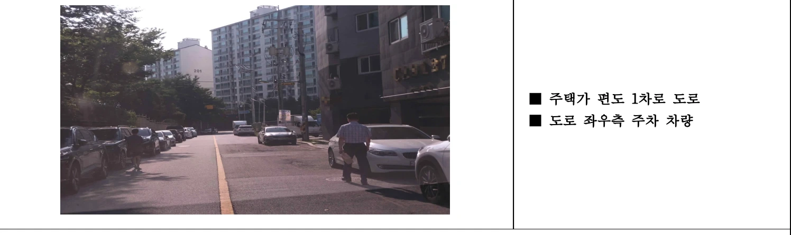

707. Hai cách lái xe nào là an toàn nhất trong tình huống sau?

- ①Liên tục nhấn còi để cảnh báo người đi bộ và tăng tốc để đi nhanh.
- ②Không cần đề phòng hành vi bất ngờ của người đi bộ ở bên trái vạch kẻ giữa đường.
- ③Trong số các xe đang đỗ, có thể có xe đột ngột xuất phát nên phải quan sát kỹ phía trước, trái phải và đi chậm.
- ④Giữ khoảng cách với người đi bộ bên phải, chú ý an toàn và lái xe chậm.
- ⑤Trong các khu dân cư, thông thường sẽ an toàn khi đi phía bên trái của vạch kẻ giữa đường.
Xem đáp án
Đáp án
③ Trong số các xe đang đỗ, có thể có xe đột ngột xuất phát nên phải quan sát kỹ phía trước, trái phải và đi chậm.
④ Giữ khoảng cách với người đi bộ bên phải, chú ý an toàn và lái xe chậm.
Căn cứ
Nên tránh bấm còi liên tục mà không có lý do chính đáng, đồng thời khi đi ngang qua người đi bộ nên giữ khoảng cách an toàn và giảm tốc độ để người đi bộ vượt an toàn. Cấm vượt vạch giữa đường và vượt bên trái, trừ những trường hợp đặc biệt.
Phần căn cứ là bản dịch máy để tham khảo.